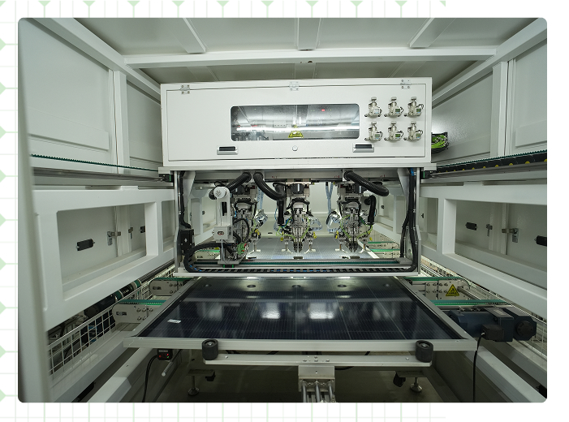
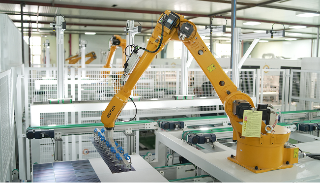

Solar Panels
High-efficiency modules, proudly made in India

Solar Panels
Eastman has established a state-of-the-art solar panel manufacturing facility equipped with advanced technology and stringent quality systems. With an impressive annual production capacity of 0.8 GW, we deliver high-efficiency solar modules designed for performance, durability, and long-term reliability.
Eastman continues to support the transition toward clean and renewable energy, empowering homes, businesses, and industries with reliable solar solutions proudly made in India for a greener tomorrow.
1Manufacturing Facility
800 MWCapacity
Products Manufactured
Plant Snapshots
A look inside Eastman's solar panels manufacturing facility.

Plant Certifications
Manufactured to internationally recognized standards for quality, safety and environmental responsibility.
ISO 9001:2015
ISO 14001:2015
IEC 61215
IEC 61730
BIS / ALMM Listed